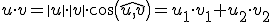
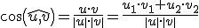
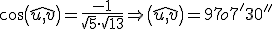

Geometría analítica
producto escalar
El producto escalar de dos vectores, u y v, es el número:

Ejemplo: u(1,2);v(3,-2) u · v = 3 – 4 = -1
Entonces, el ángulo entre dos vectores es:

En el ejemplo: u(1,2); v(3,-2)

Dos vectores, u y v, cuyo producto escalar es 0, se dice que son ortogonales. Entonces forman un ángulo de 90o.
NOTA: un vector ortogonal a u(u1,u2) es (-u2,u1)
Ejercicio. Si u(3,1), v(-2,2), w(-3,t), entonces:
a) Calcula u·v
b) Calcula el ángulo entre u y v
c) Calcula t, para que v y w sean ortogonales.
Soluciones: a) -4; b) 116º33'54''; c) -3
Obra publicada con Licencia Creative Commons Reconocimiento No comercial Compartir igual 4.0